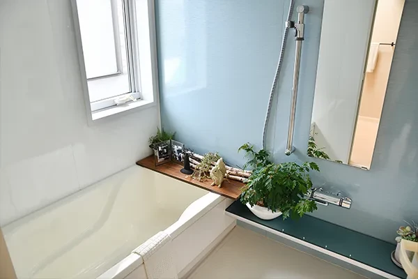
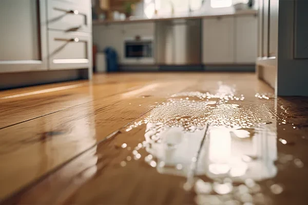
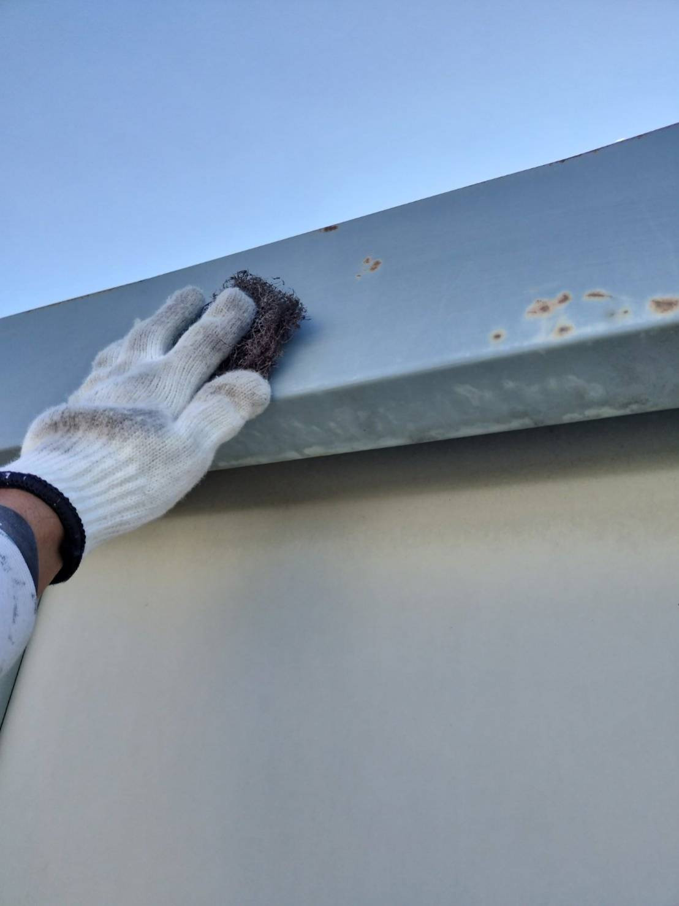

浴槽塗装
アパート・マンションオーナー様へ。浴槽は交換せずに「塗装」で再生。コストを抑えて、短工期で、入居者に選ばれるお部屋に。

浴槽の交換費用、
もっと抑えられます。
賃貸物件の原状回復やリフォームで、大きな負担になりがちなのが浴槽の交換です。浴槽本体の費用に加えて、解体や搬出、給排水の工事が必要になり、費用も工期もかさんでしまいます。
ペンキ塗総業の浴槽塗装なら、今ある浴槽をそのまま生かし、専用塗料「おふろん」で新品のような美しさによみがえらせます。解体工事が不要なため、交換に比べて費用を大幅に抑えられ、工期もわずか1日ほど。空室期間を短くし、家賃収入の機会損失を防ぎます。
耐用年数は10〜15年と長く、全8色から選べるカラーバリエーションで、お部屋のイメージアップにも効果的です。アパート・マンションのオーナー様、管理会社様からのご依頼を多くいただいています。
こんなお悩み、ありませんか？
ひとつでも当てはまるオーナー様は、浴槽塗装でコストを抑えたリフォームが可能です。
- 浴槽の交換費用が高くて悩んでいる
- 浴槽のくすみや黄ばみが目立つ
- 細かなキズや色あせがある
- 空室期間をできるだけ短くしたい
- 水まわりで物件の印象を上げたい
- 複数の部屋をまとめてリフォームしたい
放置すると、どうなる？
浴槽の劣化は、入居者の満足度や物件の評価に直結します。
ツヤ消え・くすみ
表面のツヤがなくなり、くすんだ印象に。清掃では落ちない汚れが目立ちはじめます。
黄ばみ・キズ
黄ばみや細かなキズが増え、内見時の印象が悪くなる段階。入居の決め手を逃す原因にもなります。

ひび割れ・水漏れ
表面のひびから水がしみ込み、浴槽の劣化が加速。交換が必要になり、大きな出費につながります。
ペンキ塗総業の浴槽塗装の特徴
職人の丁寧な下地処理で、塗装とは思えない美しい仕上がりをお約束します。
専用塗料「おふろん」で高耐久
浴槽専用に開発された塗料「おふろん」を使用。熱いお湯や毎日の摩擦、洗剤にも強い塗膜で、耐用年数は10〜15年。塗装したことが分からないほどの、なめらかでツヤのある仕上がりになります。

仕上がりを左右する下地処理
古い浴槽の汚れや水アカを徹底的に除去し、研磨してから塗装します。キズやひびは事前に補修。見えなくなる下地処理こそ丁寧に行うことで、はがれにくく長持ちする塗膜をつくります。
約1日で完了、空室期間を短縮
解体や設備工事が不要なため、1室あたり約1日で施工が完了します。退去から次の入居までの短い期間でも対応でき、オーナー様の家賃収入の機会損失を最小限に抑えます。
オーナー様に選ばれる、4つのメリット
浴槽を「交換」から「塗装」へ。賃貸経営の大きな味方になる、浴槽塗装のメリットをご紹介します。
コスト削減
浴槽交換の約1/3の費用（仮）で、新品のような美しさに。複数室のまとめ施工でさらにお得になります。
短工期
1室あたり約1日で施工が完了。空室期間を最小限に抑え、家賃収入の機会損失を防ぎます。
高耐久
浴槽専用塗料「おふろん」は耐用年数10〜15年。毎日の入浴にも耐える強い塗膜をつくります。
多彩なデザイン
全8色のカラーバリエーション。お部屋の雰囲気に合わせて、選べる楽しさも提供できます。
浴槽を「交換」する場合
- 費用
- 20〜30万円前後（仮）
※解体・設備工事を含む - 工期
- 3日〜1週間程度
- 工事
- 解体・搬出・給排水工事が必要で、騒音やほこりが発生
- 入居者
- 入居中の施工は難しい
浴槽を「塗装」する場合
- 費用
- 6.8万円〜／1台
- 工期
- 約1日で完了
- 工事
- 解体不要。騒音・ほこりもほとんどありません
- 入居者
- 空室期間を最小限に抑えられる
おふろん 全8色のカラー見本
定番の白から、お部屋の印象を変えるカラーまで。物件のコンセプトに合わせてお選びいただけます。
※画面上の色は実際の色と異なります。実物の色見本をお持ちします。
きれいな水まわりは、
入居率アップにつながります。
お部屋探しをする方が内見で特に注目するのが、浴室やキッチンなどの水まわりです。浴槽のくすみや黄ばみ、細かなキズは、それだけで「古い」「清潔感がない」という印象を与え、入居の決め手を逃す原因になりかねません。
浴槽塗装なら、低コスト・短工期で水まわりの印象を一新できます。人気のカラーを取り入れて、他の物件との差別化を図ることも可能です。退去後の原状回復のタイミングでの施工がおすすめです。
法人・管理会社さまからの
ご依頼も歓迎しています。
複数物件・複数室のまとめての施工や、退去のたびの定期的なご依頼にも柔軟に対応します。お見積り・請求書の発行、施工前後の写真報告もお任せください。
複数室まとめて
一棟まるごとの施工で費用を抑えられます。
写真付き報告
施工前後の写真を報告書でお渡しします。
日程の調整
退去・入居のスケジュールに合わせます。
請求書払い
法人さま向けの請求書払いに対応します。
使用する塗料
浴槽専用に開発された、高耐久の塗料を使用します。
おふろん
浴槽専用の高耐久塗料。熱湯や摩擦、洗剤に強く、なめらかなツヤのある仕上がりに。
専用プライマー
FRP・ホーロー・人工大理石など、浴槽の素材に合わせて密着性を高めます。
全8色
定番のホワイトからパステルカラーまで、物件に合わせて選べます。
料金の目安
代表的な工事の料金の目安です（すべて税込）。
| 工事内容 | 料金の目安 | 備考 |
|---|---|---|
| 浴槽塗装（おふろん・1台） | 6.8万円〜 | 下地処理・補修・塗装を含みます |
| 複数台まとめて施工 | お見積り | 台数に応じてお得になります |
| エプロン部分の塗装 | 現地調査後 | 浴槽と同時施工がおすすめ |
※建物の形状・劣化状況により変動します。正確な金額は無料の現地調査後にお出しします。
浴槽塗装の流れ
お問い合わせから完成まで、職人が責任を持って担当します。
お問い合わせ
物件の所在地・室数・浴槽の状態をお知らせください。
現地調査・お見積り
浴槽の素材や劣化状況を確認し、お見積りします。
下地処理
汚れや水アカを除去し、研磨・補修を行います。
塗装
専用プライマーとおふろんで、丁寧に塗り重ねます。
乾燥・お引き渡し
十分に乾燥させ、仕上がりを確認してお引き渡しします。
 BEFOREAFTER
BEFOREAFTERお客様の声
交換の見積もりが高くて困っていたところ、浴槽塗装を提案してもらいました。費用は大幅に抑えられたのに、仕上がりは新品同様。次の入居者もすぐに決まりました。
退去のたびにお願いしています。日程の融通がきき、写真付きの報告書も分かりやすいので、オーナー様への説明もスムーズです。
浴槽塗装のよくある質問
FRP・ホーロー・人工大理石など、ほとんどの浴槽に対応しています。素材によって下塗り材を使い分けますので、現地で確認させてください。
塗装後、十分な乾燥時間をとる必要があります。目安として施工の翌日以降にご使用いただけます。
施工と乾燥の間は浴室が使えないため、空室時の施工をおすすめしています。入居中の場合はご相談ください。
丁寧な下地処理と専用塗料により、はがれにくい塗膜をつくります。万一の不具合にも誠実に対応します。
はい、もちろん可能です。戸建てやご自宅の浴槽のご相談もお気軽にどうぞ。
関連するサービス


プレゼント中
まずは無料診断から。
お住まいの気になるところ、まずはお気軽にご相談ください。職人が直接うかがい、無料で診断・お見積りいたします。
 写真を送るだけで概算もOK
写真を送るだけで概算もOKお見積り